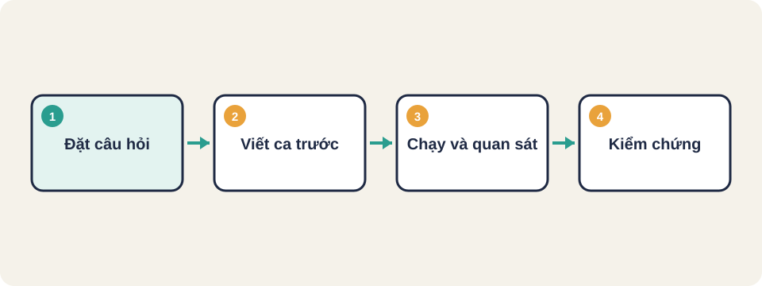
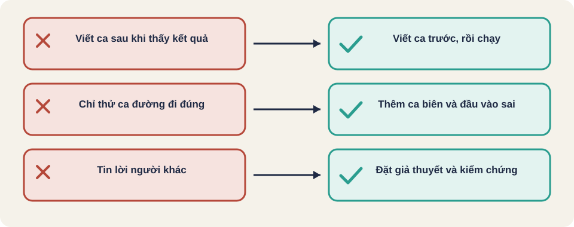

Hình vẽ gốc, dùng để minh họa thứ tự các bước chính của bài.
Tester đặt câu hỏi thay vì chỉ xác nhận điều mong đợi. Nhận ra các thiên kiến làm bỏ sót lỗi.

Hình vẽ gốc, dùng để minh họa thứ tự các bước chính của bài.
Lập trình viên thường hỏi: "Code có chạy không?". Tester hỏi: "Có cách nào làm nó sai không? Ai sẽ bị ảnh hưởng nếu nó sai?". Cùng một tính năng, hai câu hỏi dẫn tới hai bộ ca hoàn toàn khác.
Thiên kiến nhận thức (cognitive bias) là lối suy nghĩ lệch có hệ thống, xuất hiện mà người mắc không tự biết. Tester không miễn nhiễm. Thiên kiến làm ta chọn ca dễ, bỏ qua ca khó, và tin kết quả đẹp hơn mức thật.
Nguồn: danh sách thiên kiến trên Wikipedia (List of Cognitive Biases) [đã đọc].
| Thiên kiến | Định nghĩa ngắn | Ví dụ trong kiểm thử | Cách chống |
|---|---|---|---|
| Xác nhận (confirmation) | Chỉ tìm và tin thông tin củng cố điều đã tin | Tin module thanh toán ổn, chỉ chạy ca thành công | Viết ca làm hệ thống sai trước |
| Neo (anchoring) | Phụ thuộc quá mức vào thông tin đầu tiên | Lỗi được đánh giá "nhỏ" theo báo cáo đầu, dù tác động lớn | Đánh giá lại mức độ sau khi điều tra |
| Sẵn có (availability) | Đánh giá cao rủi ro dễ nhớ, mới xảy ra | Vừa có sự cố bảo mật nên chỉ kiểm bảo mật, bỏ hiệu năng | Lập bảng rủi ro theo dữ liệu, không theo trí nhớ |
| Sống sót (survivorship) | Chỉ nhìn thứ còn lại sau một quá trình lọc | Chỉ phân tích build qua được hồi quy, bỏ qua build bị loại | Hỏi: dữ liệu nào đã bị loại khỏi tầm nhìn? |
| Thiên kiến | Định nghĩa ngắn | Ví dụ trong kiểm thử | Cách chống |
|---|---|---|---|
| Ngụy biện lập kế hoạch (planning fallacy) | Đánh giá thấp thời gian cần để xong việc | Ước 2 ngày viết bộ test tự động, thực tế gấp ba | Lấy thời gian thực của việc tương tự làm mốc |
| Dunning-Kruger | Người mới đánh giá cao, chuyên gia đánh giá thấp năng lực | Tester mới tự tin làm bảo mật mà không hỏi ai | Ghép cặp, nhờ review chéo |
| Thiên kiến tự động (automation bias) | Tin máy quá mức, bỏ qua dấu hiệu sai | Công cụ báo pass cho trang lỗi hiển thị, không ai mở xem | Kiểm thủ công một mẫu sau khi tự động chạy |
| Kỳ vọng của người quan sát | Kỳ vọng khiến ta đo và ghi nhận theo hướng mong muốn | Kỳ vọng build mới nhanh hơn, đo trong điều kiện thuận lợi | Đo theo kịch bản cố định, ghi đủ điều kiện |
Nhóm ca bắt buộc (viết TRƯỚC khi thử):
1. Đường đi đúng: email đúng, mật khẩu đúng
2. Đường đi sai: mật khẩu sai, email không có @
3. Giá trị biên: mật khẩu đúng 8 ký tự và 7 ký tự
4. Trường trống: để trống từng ô một
5. Trạng thái: đăng nhập rồi bấm Back
6. Lỗi lặp: nhập sai 5 lần liên tiếp
Chỉ sau khi có danh sách này mới chạy và ghi kết quả.Thuật ngữ trong slide này: Giá trị biên (boundary value): Các giá trị nằm ở mép của một khoảng hoặc điều kiện, nơi lỗi hay xảy ra vì lập trình viên dễ nhầm < với <=.
Một đội báo "form đăng ký đã kiểm xong, 20 ca đều đạt". Tất cả 20 ca đều là đường đi đúng. Hãy nêu ít nhất hai ca lỗi hoặc biên mà đội chưa thử, và thiên kiến nào giải thích việc bỏ sót đó.
Nguồn: James Bach, Open Lecture on Software Testing (YouTube ILkT_HV9DVU). Đây là bản tóm tắt bằng lời của người soạn bài, dựa trên phụ đề tự động; phần được đọc khoảng hai phần ba đầu bài giảng.
Nguồn: James Bach, Open Lecture on Software Testing (YouTube ILkT_HV9DVU). Đây là bản tóm tắt bằng lời của người soạn bài, dựa trên phụ đề tự động; phần được đọc khoảng hai phần ba đầu bài giảng.
Thuật ngữ trong slide này: Phủ quyết định (decision coverage): Mức độ phủ mà mỗi điều kiện rẽ nhánh (if, else) đã đi qua cả kết quả đúng và sai ít nhất một lần. · Giá trị biên (boundary value): Các giá trị nằm ở mép của một khoảng hoặc điều kiện, nơi lỗi hay xảy ra vì lập trình viên dễ nhầm < với <=. · Sự trừu tượng (abstraction): Cách biểu diễn một thứ phức tạp bằng một hình đơn giản, ẩn chi tiết bên trong. Một hộp trong sơ đồ là một sự trừu tượng.
Nguồn: James Bach, Open Lecture on Software Testing (YouTube ILkT_HV9DVU). Đây là bản tóm tắt bằng lời của người soạn bài, dựa trên phụ đề tự động; phần được đọc khoảng hai phần ba đầu bài giảng.
Thuật ngữ trong slide này: Yêu cầu chưa viết ra (unwritten requirement): Điều người dùng hiển nhiên mong đợi nhưng không ai ghi vào tài liệu, ví dụ không gây nguy hiểm, không mất dữ liệu.
Nguồn: James Bach, Open Lecture on Software Testing (YouTube ILkT_HV9DVU). Đây là bản tóm tắt bằng lời của người soạn bài, dựa trên phụ đề tự động; phần được đọc khoảng hai phần ba đầu bài giảng.
Thuật ngữ trong slide này: Heuristic: Cách làm hoặc quy tắc kinh nghiệm để tìm việc cần làm nhanh, không đảm bảo đúng. Xem slide chi tiết trong bài.
Nguồn: James Bach, Open Lecture on Software Testing (YouTube ILkT_HV9DVU), phần sau. Tóm tắt bằng lời của người soạn bài, không trích nguyên văn.
Nguồn: James Bach, Open Lecture on Software Testing (YouTube ILkT_HV9DVU), phần sau. Tóm tắt bằng lời của người soạn bài, không trích nguyên văn.
Heuristic là một cách làm hoặc một quy tắc rút từ kinh nghiệm, dùng để tìm việc cần làm nhanh khi không có công thức chắc chắn. Nó không cho đáp án đúng tuyệt đối, chỉ gợi ý nơi nên nhìn.
| Loại | Đảm bảo gì | Ví dụ |
|---|---|---|
| Thuật toán (algorithm) | Đúng cho mọi đầu vào trong phạm vi, nếu làm đúng từng bước | Công thức tính năm nhuận |
| Heuristic | Không đảm bảo. Thường nhanh, đủ tốt, và dễ sai ở tình huống lạ | Thử giá trị ở mép khoảng để tìm lỗi |
| Best practice | Tuyên bố là đúng cho mọi bối cảnh. Bài giảng James Bach phản đối cách nghĩ này | Luôn viết ca trước khi test |
Vì không đảm bảo đúng, tester phải tự hỏi: heuristic này đang gợi ý điều gì, và có chỗ nào nó không áp dụng được?
Bài giảng James Bach gọi heuristic là cách giải dễ sai nhưng hữu ích trong bối cảnh cụ thể. Ví dụ trong bài là một "dấu hiệu nhỏ có thể báo một vấn đề lớn hơn": tester thấy một thông báo lạ và đào sâu, thì thấy lỗi nghiêm trọng hơn nhiều.
| Heuristic | Quy tắc | Ví dụ áp dụng | Giới hạn |
|---|---|---|---|
| Biên (boundary) | Thử đúng mép, và ngay trên, ngay dưới mép | Tuổi 18 đến 60: thử 17, 18, 60, 61 | Không bắt được lỗi ở giữa khoảng |
| CRUD | Thử tạo, đọc, sửa, xóa cho mỗi loại dữ liệu | Sản phẩm: thêm, xem, đổi giá, xóa | Không bao quát luồng nghiệp vụ dài |
| Vừa đủ (Goldilocks) | Thử quá ít, quá nhiều, và vừa phải | Số lượng đặt hàng: 0, 1000, 5 | Chọn mức "quá nhiều" tùy bối cảnh |
| Dữ liệu xấu | Để trống, số âm, chuỗi rất dài, ký tự lạ | Ô tên: để trống, 500 ký tự, emoji | Không biết trước đầu vào nào sẽ xấu |
| Ngắt giữa chừng | Làm dở rồi thoát, quay lại, hoặc mất mạng | Đang điền form thì tải lại trang | Không phải lỗi nào cũng hiện ngay |
| Đối chiếu sản phẩm cùng loại | Xem cách sản phẩm tương tự xử lý việc này | So với trang thanh toán của ứng dụng khác | Sản phẩm khác có thể cũng sai |
| Nhất quán | Cùng thao tác, cùng kết quả; cùng ngôn ngữ và kiểu hiển thị | Nút "Lưu" ở trang này và trang khác | Đôi khi nhất quán nhưng vẫn sai |
Các quy tắc trên do người soạn bài tổng hợp từ kinh nghiệm kiểm thử thông thường, viết lại bằng lời của mình.
Giới hạn: không đảm bảo. Heuristic có thể bỏ sót lỗi ở chỗ không theo quy luật quen thuộc. Vì vậy phải kết hợp với kỹ thuật có đảm bảo hơn (phân vùng, bảng quyết định) và ghi lại kết quả để đánh giá heuristic đó có đáng dùng không.
Các ý trên do người soạn bài viết từ kinh nghiệm kiểm thử thông thường.
Ví dụ này cho thấy heuristic là một chuỗi bước có thể làm lại, không phải một ý chung chung. Mỗi bước có đầu ra kiểm được.
Thuật ngữ tiếng Anh: decision coverage, boundary value, abstraction, professional skepticism, rapid learning, unwritten requirement, context, heuristic, focus, defocus, follow-up testing, backtracking.
Thuật ngữ trong slide này: Phủ quyết định (decision coverage): Mức độ phủ mà mỗi điều kiện rẽ nhánh (if, else) đã đi qua cả kết quả đúng và sai ít nhất một lần. · Giá trị biên (boundary value): Các giá trị nằm ở mép của một khoảng hoặc điều kiện, nơi lỗi hay xảy ra vì lập trình viên dễ nhầm < với <=. · Sự trừu tượng (abstraction): Cách biểu diễn một thứ phức tạp bằng một hình đơn giản, ẩn chi tiết bên trong. Một hộp trong sơ đồ là một sự trừu tượng. · Heuristic: Cách làm hoặc quy tắc kinh nghiệm để tìm việc cần làm nhanh, không đảm bảo đúng. Xem slide chi tiết trong bài. · Yêu cầu chưa viết ra (unwritten requirement): Điều người dùng hiển nhiên mong đợi nhưng không ai ghi vào tài liệu, ví dụ không gây nguy hiểm, không mất dữ liệu.
Nguồn: FreeLearningResourcesForSoftwareTesters, mục "The Testing Mindset".

Phủ quyết định (decision coverage)
Giá trị biên (boundary value)
Sự trừu tượng (abstraction)
Heuristic
Yêu cầu chưa viết ra (unwritten requirement)